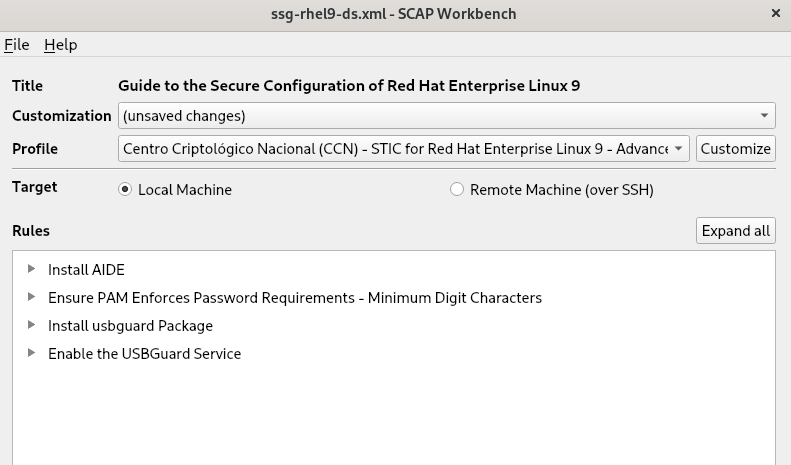

Ejecución de compliance con OpenSCAP
Evaluación de compliance
Podemos ver todos los perfiles disponibles para evaluar el compliance de nuestro sistema con el comando:
[root@client ~]# oscap info /usr/share/xml/scap/ssg/content/ssg-rhel9-ds.xml
...
Title: Centro Criptológico Nacional (CCN) - STIC for Red Hat Enterprise Linux 9 - Advanced
Id: xccdf_org.ssgproject.content_profile_ccn_advanced
...
[root@client ~]#En RHEL 9 se incluyen varios perfiles de seguridad implementando las recomendaciones del Centro Criptológico Nacional (CCN):
-
Centro Criptológico Nacional (CCN) (Advanced) para RHEL 9.
-
Centro Criptológico Nacional (CCN) (Intermediate) para RHEL 9.
-
Centro Criptológico Nacional (CCN) (Basic) para RHEL 9.
El profile Centro Criptológico Nacional (CCN) (Advanced) para RHEL 9 es el que nosotros usaremos. Para evaluar el compliance usando este estándar y guardar los resultados en un fichero ejecutaremos:
[root@client ~]# oscap xccdf eval --profile xccdf_org.ssgproject.content_profile_ccn_advanced --results /root/results.xml /usr/share/xml/scap/ssg/content/ssg-rhel9-ds.xml
...
Title System Audit Logs Must Have Mode 0640 or Less Permissive
Rule xccdf_org.ssgproject.content_rule_file_permissions_var_log_audit
Ident CCE-83720-3
Result pass
...
Title Record Events that Modify the System's Discretionary Access Controls - chmod
Rule xccdf_org.ssgproject.content_rule_audit_rules_dac_modification_chmod
Ident CCE-83830-0
Result fail
[root@client ~]#Podemos ver como en el ejemplo para cada una de las políticas del estándar, cuáles han pasado el test y cuáles han fallado.
También podemos generar un report html a partir del anterior fichero de resultados con:
[root@client ~]# oscap xccdf generate report /root/results.xml > results.html
[root@client ~]#Si abrimos el report vemos lo siguiente:
Customización de un perfil de compliance
Para customizar un perfil de compliance hemos de crear un tailoring file, para ello ejecutaremos el programa de scap-workbench:
[root@client ~]# scap-workbenchEl programa carga los data streams que estén instalados en el servidor:
Seleccionamos el profile de Centro Criptológico Nacional (CCN) - STIC for Red Hat Enterprise Linux 9 - Advanced. Vamos a Customize y seleccionamos un nombre de perfil, dejaremos el que crea por defecto. A continuación marcamos Deselect all, así empezaremos con todas las reglas deshabilitadas:
Marcaremos las siguientes opciones Ensure PAM Enforces Password Requirements - Minimum Lenght y buscamos un poco más arriba la opción de minlen para setearlo a 12*:
y editamos la opción de minlen para setearlo a 12:
A continuación marcaremos la opción para instalar AIDE y también para instalar y habilitar el servicio de USBGuard:
|
El servicio AIDE o Advanced Intrusion Detection System es un servicio que crea una base de datos del archivos del sistema que se utiliza para comprobar la integridad de los ficheros del sistema y poder detectar cuando un fichero del sistema ha sido modificado y poder detectar actividad maliciosa en el sistema. El servicio USBGuard permite securizar el acceso a los puertos USB pudiendo configurar que tipo de dispositivos USB se pueden configurar en el sistema y que usuario está autorizado a conectarlos. Con lo que tendremos un tailoring file con estas 4 reglas definidas:

A continuación, vamos a File → Save Customization Only, le damos el nombre de lab-tailoring.xml y lo guardamos dentro de /root. Con este tailoring file, podemos ejecutar un nuevo scan que sólo compruebe estas 4 reglas que hemos añadido al perfil vacío. Para ello, primero necesitamos obtener el nombre del perfil ya que lo hemos customizado: Vemos que el nombre del perfil nos aparece al final, donde pone Id. Con este nombre de perfil podemos lanzar un scan que compruebe las 4 reglas y guardarlas también en fichero de resultados: Vemos que ha fallado el test de las 4 reglas. Para corregirlo, crearemos un playbook de Ansible que lo hará automáticamente. == Generación de un playbook para aplicar remediaciones de forma automática Con el fichero de resultados del anterior apartado /root/lab-results-tailoring.xml podemos crear un playbook usando: Necesitamos crear un inventario ya que el playbook tiene la sección hosts: all para limitarlo hemos de añadir lo siguiente echo client > inventory, y con esto ya podemos ejecutar el playbook generado: Un nuevo scan en el servidor nos debería dar los 4 checks como ok: |